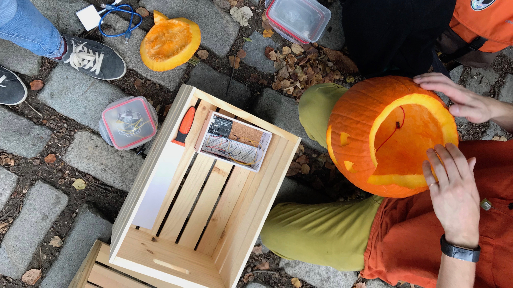

Instruction Set for Strangers
Oct 2018
Working in teams of two, research a public space and create a site-specific interface that connects strangers within this space.

Instruction Set for Strangers